Summary
OmniCloud
OmniCloud is a cloud storage and file synchronization service that allows users to store, customize, share, and work on files all in one place, solving a need for thousands of users worldwide.
Overview
Problem
Cloud storage apps are known for securely storing digital assets such as photos and documents. But what if you wanted to create and store your morning to-do list? Wouldn’t it be easier if you could create that list all in one app? While there are some apps that lets users edit and share files, other can become overwhelmed and get lost in the app.
Solution
OmniCloud aims to address these concerns by bringing these features together in a simple, no-frills layout. Our major design challenge was to offer users a way to jot down notes, store files, and share ideas in one place. Users wouldn’t have to jump from one app to another. Keeping the client’s requests in mind, I explored the requirements’ favorability in the market through user research. The design process was built on consistent feedback as it focused on bridging the desires of stakeholders and the needs of users.
Roles
- UX Researcher
- Content Strategist
- Visual Designer
- UX Designer
Deliverables
- Competitive analysis
- Survey results
- User personas
- Sitemap
- Wireframes
- High fidelity prototypes
Tools
- Sketch
- Balsamiq
- Maze
- InVision
Process
Discover and Analyze
Client Brief
My client had an idea for a cloud storage app with the right combination of features to meet the needs of a specific audience. They have yet to explore their vision, brand, and audience, but they have a current set of desired features:
Requirements:
- saving content you find on the web (links, images, videos, etc.)
- organizing that content using things like categories, tags, groups, and/or folders
- creating content (notes, documents, maybe spreadsheets?)
- uploading files (videos, images, PDFs, etc.) from a computer or mobile device
- sharing a single item with someone else (and vice-versa)
- sharing a folder or group of items with someone else (and vice-versa)
- connecting with other users for real-time collaboration in notes or documents
Exploring the Market
To begin, I wanted to understand the market for cloud storage apps. I explored the current landscape through a competitive analysis, which looked into three major competitors that catered to specific interests. Here are some notable findings:
Gaining Insights from Surveys and Interviews
After capturing a picture of the competitive landscape, I wanted to understand what users thought about cloud storage apps by creating a survey with the following goals:
- To capture users’ general thoughts on cloud storage apps
- To understand users’ opinions on their preferred cloud storage apps
- To inspect features in the apps that are favorable
- To explore pain points and frustrations
- To gauge interests in collaboration features
Here are the key findings among the 32 students and young professionals between the ages of 18-34. A majority of them use well-known cloud storage apps such as Google Drive and DropBox.
- 50% of users utilize cloud storage apps for personal use and typically store, create, edit and collaborate on files
- 70% find it helpful for cloud storage apps to be accessible across devices
- About half of respondents find that web interface and security could be improved.
- There were mixed reviews on collaboration features, yet those who favor them used cloud storage apps for business
While these findings were helpful, I have only scratched the surface. It was time to dig deeper and ask: who really are these users? What value do they get from using these cloud storage apps?
To understand our users better, I interviewed three individuals about themselves, their daily habits, and their experiences with cloud storage apps. The interview style was largely open-ended.
The pattern that emerged from the interviews was their need to have their files synchronized and accessible in both desktop and mobile. While one did not care for collaboration features, others thought it would be great if it were kept simpler than Google Docs. These insights helped me discover two types of users: the casual user and the expert. The casual user uses one to two main features such as uploading photos, while the expert uses multiple features such as editing and collaborating on files. These findings were laid out into the following personas:
"I have tons of photos and docs - I need a place to keep them all."
Goals
To find an easy, secure and free way to store essays, notes, and photos.
Frustrations
- Not enough storage
- Some features can be excessive
Motivations
- Easy-to-use interface
- Able to use app in phone and laptop
“Always in search of the best products for my team’s needs. ”
Goals
To keep digital assets secure; to be more efficient through collaborative work.
Frustrations
- Not enough storage space in premium accounts
- Privacy and security are questionable
Motivations
- Convenience of working with a team in real time
- Efficient, versatile app
Do Stakeholder Needs = User Needs?
Now that I understood the needs of the two types of users, I re-examined the requirements from the stakeholders to see how their needs align with that of our users.
Requirements:
-
saving content you find on the web (links, images, videos, etc.)
-
organizing that content using things like categories, tags, groups, and/or folders
-
creating content (notes, documents, maybe spreadsheets?)
-
uploading files (videos, images, PDFs, etc.) from a computer or mobile device
-
sharing a single item with someone else (and vice-versa)
-
sharing a folder or group of items with someone else (and vice-versa)
-
connecting with other users for real-time collaboration in notes or documents
Do user and stakefolder needs align? Almost. It depends on the type of user.
I realized that the expert user would not only benefit from basic cloud storage app features, but would also prefer to connect with others for real-time collaboration on projects. Given that only a few cloud storage apps offer this set of features, I decided to keep the expert users’ needs in mind while constructing the app.
Information Architecture
User Stories and Flows
To map out the interactions of the main features, I listed user stories from low to high priority for both new users and returning users. During the sketching and wireframing process, items high on the priority list were included in the minimum viable product.
User stories based on priority
High
- Onboarding
- Creating a new file
- Editing and deleting files
- Organizing content
- Uploading content
- Sharing content
- Collaboration features
- Signing out
Medium
- Account settings
- Creating tags or labels
- Seeing changes made by collaborators
- Search bar
- Accessing app on another device
Low
- Profile settings
- FAQs
- Tutorials
- Business plan
- Update subscription plan
To visualize these processes, I sketched user flows for items in high priority. I aimed to simplify these stories by keeping familiar flows. The onboarding process, for example, has been a target of complaints by survey responders. To simplify this, I gave users the option of signing up with their Google and Facebook accounts.
Mapping out the onboarding process
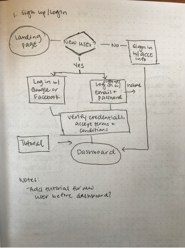After feedback and refinement, I mapped the flows digitally for improved legibility.
Initial ideas of seamless onboarding
Sitemaps and Wireframes
Taking inspiration from my research findings and user flows, I laid out a sitemap that would be appropriate for a minimum viable product (MVP). The primary pages are the landing page and the dashboard. Other core features such as logins and signups are presented in modals.
With prioritized user flows, I began piecing together the elements in rough sketches and wireframes. Using Balsamiq, I created rough versions of the landing page, dashboard and other screens for the primary user flows.
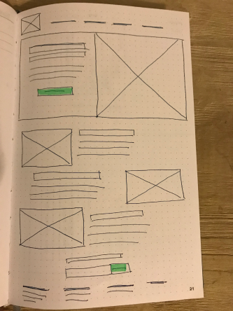 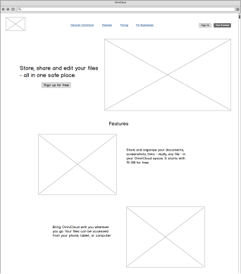Part of the landing page
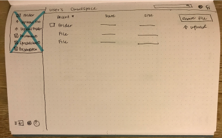 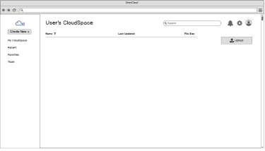Dashboard versions
1st Round of Testing: User Flows
To test my assumptions about appropriate placements of elements, I conducted remote usability tests with two individuals. Testers were tasked to do three tasks: signing up for an account, adding a piece of content, and organizing content. Overall, the users found the tasks to be simple and straightforward. A few suggestions came up about adding a tutorial and other convenient interactions such as clicking-and-dragging items into a folder.
Design
Brand Identity and Content Strategy
Before sketching page layouts, I decided to work on the brand identity to figure out the hierarchy of elements and sprinkle content throughout the site.
The origin of the name OmniCloud: The current ideas for the cloud storage app lean toward becoming a base for storing, creating, customizing and sharing files. Thinking about the words versatility and boundless to describe this app’s capabilities, I searched for words with a similar meaning. There, I discovered the prefix omni meaning “all” and combined it with the nature of this project, the cloud storage app.
The name “OmniCloud” could remind someone of the word “omnipotent”, which is often used to describe an all-powerful deity, or “omnificent”, which describes one with unlimited creative power. To describe something of such high regard is to equate it with something robust, reliable and secure.
Keeping this and my research findings in mind, I have developed the following:
- Mission Statement: to equip professionals with robust, reliable and secure tools that will make their everyday work life simpler.
- Vision: to see OmniCloud as a popular choice across companies, schools, and collaborative spaces
- Target Audience: students and professionals from age 18 and above
- Brand Voice: conversational, friendly, welcoming and instructive
- Brand Personality: think of a supervisor or mentor who is knowledgeable, firm and caring
Crafting OmniCloud’s Style Guide
When I thought of the name OmniCloud, I envisioned a sleek and modern logo with nodes, vortexes, and webs to depict the networks OmniCloud can reach through sharing and collaboration.
Conceptualizing the feel of OmniCloud through mood boards
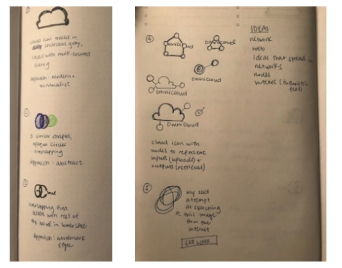 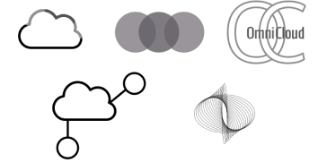First ideas in sketches - both analog and digital
Ultimately, I decided to piece sets of ellipses together and included a logotype with a futuristic font and dual-color scheme. These details reflect OmniCloud’s expertise, professionalism, and openness to evolve as a modern cloud storage application.
To further assist users in feeling the sense of professionalism, robustness, and reliability, the following color palettes and typography were selected. For more details, check out the OmniCloud Style Guide.
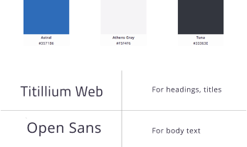Adding Style and Color to High Fidelity Mockups
With feedback gathered about layouts and additional features, I developed high-fidelity mockups for both desktop and mobile views with Sketch and InVision. Using the style guide, I first built a design system to maintain consistency across patterns and elements throughout the site.
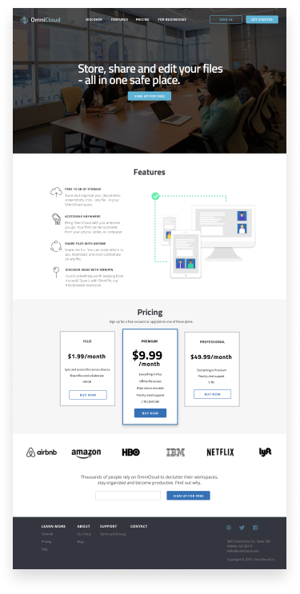 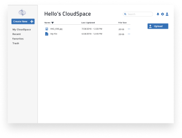 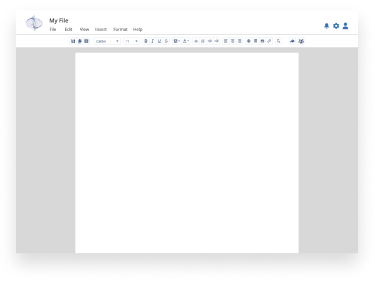2nd Round of Testing: User Flows, Style, and Brand
I conducted the first round of usability tests on three individuals. I asked them to not only sign up for a new account, add content, and organize items, but to also share files and add collaborators. Here were the most notable suggestions:
- Did not like having the sign up modal on another blank page
- Instead of adding a gray overlay on selected files, add ellipses to encourage users to seek more options
- Menu for mobile looks confusing when it is scattered; stacking it like the file menu window might help with legibility
Users were also asked about their general opinions of OmniCloud, its brand and whether they would be motivated to use the app in the future. They felt that the app was simple, intuitive, and professional. Some remarked that they would not need to use the text editor, but would use the app to store files such as photos from their devices. Others who found the editing features helpful would intend on using it again in the future.
3rd Round of Testing: Preferences for Style and Function
Taking recent suggestions into consideration, I revised parts of the OmniCloud desktop and mobile mockups and conducted another usability test to determine what new users preferred. Using Maze, I sent out a brief preference test with the following design comparisons:
Results: Settings
Over 60% preferred to have the settings icons on the top right of the dashboard. The thought that it was more intuitive and made sense to pair it close to the search bar.
Results: Sign Up/Sign In Form
About 90% preferred to have the Sign Up/Sign In form as a modal on the landing page. They thought this was more interesting and felt that it was more direct.
Results: Labels for Text Editor Icons
About 75% preferred to have labels underneath the icons on the top navigation bar of the text editor. They like icons being made clear for them.
Taking these findings into consideration, I polished the mockups and updated their prototypes. You can view the latest prototypes here:
Conclusion
Lessons Learned
Looking back at OmniCloud’s development, there were certain points in the journey that were surprising, yet enlightening. During the discovery phase, I learned that the majority of users’ needs did not always align with those of my client, the stakeholders. To set a compromise between these expectations became an immediate challenge. I learned that one needs to think outside the box and research deeper to address this issue. I learned that by researching and testing early and frequently, your project would be spared from trouble down the line.
I also learned to embrace iteration, but to also be mindful of deadlines. Iterations debunk our initial assumptions about the “best version” of our product, but they could be time-consuming. I learned that minimizing scope creeps and establishing design systems early in the creative process would save time and avoid missing deadlines.
Overall, this project helped me become more confident in my research and design thinking skills. Going forward, I hope to refine these skills with complex projects involving teams. My next goal is to learn more about the latest design methods, so that I could implement a quicker, more efficient process to produce meaningful products.